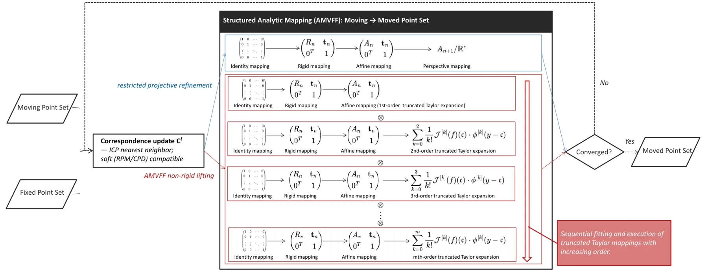

基于结构化解析映射的点集配准Structured Analytic Mappings for Point Set Registration
直接命中点云/点集配准且有清晰解析结构和复杂度主张；优势范围限定于小幅平滑形变，鲁棒性与部分重叠能力待验证。
一句话工作总结
以截断 Taylor 基构造显式低复杂度形变空间，在 ICP 中统一刚性、仿射与非刚性点集配准。
摘要
本文以向量值函数的多元 Taylor 展开构造非刚性点集配准模型。截断基项张成低复杂度、显式的结构化函数空间，并用 quasi-Newton 优化把 identity map 逐步提升为高阶解析映射；该形式在同一闭式框架中统一刚性、仿射和非线性形变，不依赖 kernel 或高维参数化。将其嵌入默认采用最近邻对应的标准 ICP loop 后得到 Analytic-ICP。摘要报告 quasi-linear 时间复杂度，并称其在 2D/3D 小幅平滑形变上比 CPD 和 TPS-RPM 更准确、收敛更快。
We present an analytic approximation model for non-rigid point set registration, grounded in the multivariate Taylor expansion of vector-valued functions. By exploiting the algebraic structure of Taylor expansions, we construct a structured function space spanned by truncated basis terms, allowing smooth deformations to be represented with low complexity and explicit form. To estimate mappings within this space, we develop a quasi-Newton optimization algorithm that progressively lifts the identity map into higher-order analytic forms. This structured framework unifies rigid, affine, and nonlinear deformations under a single closed-form formulation, without relying on kernel functions or high-dimensional parameterizations. The proposed model is embedded into a standard ICP loop -- using (by default) nearest-neighbor correspondences -- resulting in Analytic-ICP, an efficient registration algorithm with quasi-linear time complexity. Experiments on 2D and 3D datasets demonstrate that Analytic-ICP achieves higher accuracy and faster convergence than classical methods such as CPD and TPS-RPM, particularly for small and smooth deformations.
中文解读摘录
- 作者：Wei Feng, Tengda Wei, Haiyong Zheng
- 价值判断：直接命中 point cloud registration，在一个显式低复杂度函数空间中统一刚性、仿射和非线性形变，避免 kernel 与高维参数化。
- 技术要点：以向量值函数的多元 Taylor 展开构造截断基，使用 quasi-Newton 逐步把 identity map 提升到高阶解析形式，并嵌入默认最近邻对应的 ICP loop。
- 关键结果：摘要报告 quasi-linear 时间复杂度，并在 2D/3D 数据上对小幅、平滑形变比 CPD 和 TPS-RPM 更准确、收敛更快；大形变、离群点和部分重叠仍需正文验证。
- 链接：arXiv · PDF
图表/页面预览

{kind=link}
